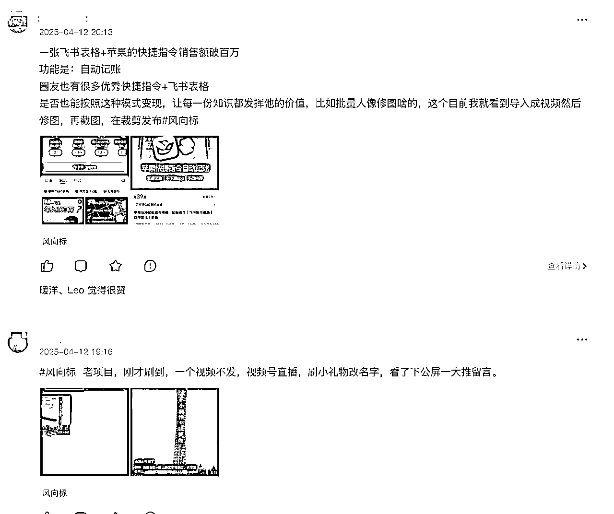
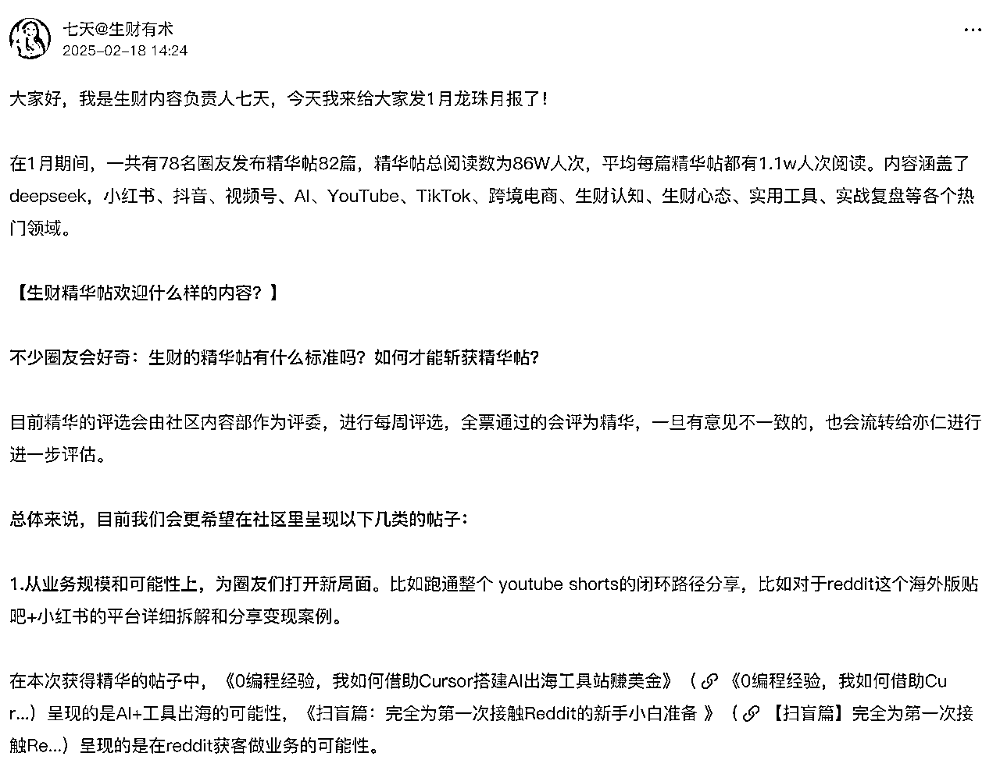

来源：https://shengcaiyoushu01.feishu.cn/docx/K5VudhA01oG8WdxDanEc65djnIb
大家好，我是千易！
我是17年全职开始创业，2020年口罩起到现在一直是一人公司模式，主要做抖音直播带货业务。
2024年加入生财，在生财学习小红书、视频号的平台玩法，并且结交了很多志同道合的朋友。
2024年一年营收过千万，利润过百万，过去这一年中，生财有术在项目挖掘、技能提升、赚钱信息获取等方面
帮助了我很多，我也输出了几篇精华帖。
今天就给大家分享一下我自己是如何使用生财有术，拓展一人公司业务的。
新人你好，我的生财使用说明书，请笑纳。适用于自由职业者、一人公司创业的人群，
能解决你从没有项目到变现闭环的卡点。分为几个步骤：
1.学习项目挖掘技能，建立自己的项目库；
2.提升个人实操经验，从0到1落地项目；
3.落地过程复盘总结，写出精华帖拿龙珠；
4.创业是场马拉松，如何补充创业心力。
很多朋友加入生财有术的目的都是赚钱，也有很多圈友和我一样，是一人公司模式，自己带着几个助理做一个小而美的生意。
无论是副业，还是一人公司，新人圈友来生财的第一目的就是要找到一个优质的项目，本节内容就把我过去一年积累的经验分享给大家，我是如何从生财挖掘优质项目的呢？
挖掘优质项目第一步不是到处找项目，而是要先学习如何挖掘！
挖掘方法比项目本身更重要，有了正确的方法不就可以挖掘出来很多的项目了嘛！
具体操作也很简单！
1、打开生财有术，直接使用搜索功能：搜索：“项目挖掘”、“挖掘方法”、“项目分析”等关键词，找到高手圈友分享的挖掘方法精华帖；
2、有很多的主题精华帖都是圈友投票、亦仁大哥以及生财团队认证过的，质量很高。
我们可以从上往下看，不用可以看时间，方法层面的内容历久弥新，给大家列举几个案例~
3、把精华帖里面很好的整理出来，然后总结成思维导图、知识库，就获得了项目挖掘的完整体系！
具体怎么做整理也有圈友总结好了！
懂得了挖掘方法，接下来就是大展身手的时候了！那么我们去哪儿能够高效的挖掘项目呢？我是从这几个地方开挖的！
亦仁大哥说过，挖掘项目就是要找异常值，异常数据里面藏着优质的项目！
生财有术里面有专门的找异常值的地方——风向标 + 中标！
风向标里面是众多圈友整理出来的风向标，相当于有上千人为你提供优质的项目信息，我们就可以从这入手开始挖掘！每天都有很多内容~

如果想要快速的获得项目信息可以直接看【中标】有生财团队官方认证的优质项目信息！
生财有术在2024年新推出了超级标，有生财老大亦仁亲自认证的当下热点项目，帮助大家从更高的，更优质的信息源中挖掘到更加优质的项目。去年推出AI方向，今年已经大爆发了！
除了风向标以外，还有圈友把自己的项目成功经验分享出来！所以，我们可以从精华帖中直接找一些项目。并且还能够挖掘出一些项目从0到1的流程。
在我们看精华帖的时候，要注意时间，有些项目是有时效性的，越新的精华帖效果越好！
用以上方法，就可以挖掘到不止一个优质的项目，你会得到一个项目库！
妈妈再也不用担心我没有项目了~
在过去一年中，我通过生财也提高了自己做项目的能力，去年我的业务除了坚持做了4年的抖音业务之外，还拓展了小红书、视频号的项目，在做之前我对这两个平台没有任何了解，但是通过半年的实战也已经从0到1跑起来了。其中生财有术的两个模块对我帮助很大，用很小的成本完成了实战技能的提升！
如果你面对的项目是一个新平台的项目，对平台规则、基础操作、选品方向、起号流程等没有任何了解。那么你来到生财最需要做的就是报名大航海，然后跟着航海手册实战——有很大概率可以跑通从0到1！
到现在为止，我持续报名了小红书、视频号的带货业务、AI赋能方向的航海。
来到生财有术不参加航海的损失最大。航海的整个模块不亚于市面上常见的几千的培训。
具体包括航线图、文字版的航海手册、负责的航海教练和志愿者，航海微信群大家随时交流答疑，以及每天的打卡。
航海手册是非常系统的帮助圈友从0到1。但是，大家做的具体项目不同，面对的问题也不同，在实战过程中，遇到具体问题怎么办？
我就用一招就可以解决项目中99%的问题。那就是直接搜索关键词找精华帖！
找到精华帖看完还没有解决问题怎么办呢？
你还可以直接链接该精华帖的博主大佬了！找到鱼丸对接，礼貌的一对一咨询，快速解决问题！
实践出真知！
从0到1跑通项目的关键就是个人实战技能和项目匹配！
实践的过程、解决问题的过程就是个人实战技能提升的过程！
来到生财有术一年，我一共发了8篇文章，其中5篇是精华帖。给大家分享一下新手如何快速写出精华帖。
首先，越分享越幸运！真诚的利他才能写出优质的精华帖。精华帖要对他人有用！
第二，精华帖的种类很多，不仅仅是成功的项目经验，还有失败的教训，自己总结的方法、提效的技能等等，只要是接地气、对他人有帮助的都有机会获得精华帖。
第三，写精华帖不需要文笔华丽，词藻丰富，所以不要有畏难情绪，我们只需要把自己想说的有逻辑、有条理地说出来就行！
第四，只要动手，哪怕是每月一次的总结，对自己都是有帮助的。写文章也能让自己的思路更加清晰！输出还能倒逼输入，这是非常宝贵的。把你的实战经验发出来就有收获！
第五，具体怎么写， 生财团队也总结了：《生财精华帖欢迎什么样的内容》：https://t.zsxq.com/mLwG1

作为一人公司创业者来说，大多数时候是自己一个人在创业路上前行，所以也会有一些焦虑、孤独、遇到问题没人商量，很多时候也会迷茫，也会心力憔悴。俗话说，一个人走得快，一群人走得远！如何才能提高自己的心力，让自己每天起床都能能量满满呢？
生财官网里面每个月都有很多圈友发起同城聚会，有时间的圈友可以参加，线上网聊千遍，如何线下见一面。也能够认识和自己志同道合的朋友，做同一个平台，同一类项目，可以相互交流经验，而且还能链接到一些牛人，成为自己的榜样，给自己提供能量。
看精华帖对我来说，除了需要解决问题的时候去看，我还会在感觉自己心力能量降低的时候去看。
从感性的角度来看，精华帖不就是很好的鸡汤文嘛！
有00后年入百万，也有大学生副业成功、还有70后持续前进，作为创业者来说，坚持不懈的努力才会更有机会拿到大结果！你会感觉世界上还有很多人和自己一样在奋斗，在努力！自己和他们比起来，还有很大的差距，更需要努力往前走。而且往前走的人有很多都拿到了大结果。
所以，我会在自己迷茫的时候，感觉疲累的时候，漫无目的的看精华帖，从里面不仅仅找到方法，还找到能量！
欢迎你也和我一起在生财有术做成一人公司，链接更多志同道合的朋友，找到一起做事的伙伴，在创业这一场人生马拉松中不断的前进！